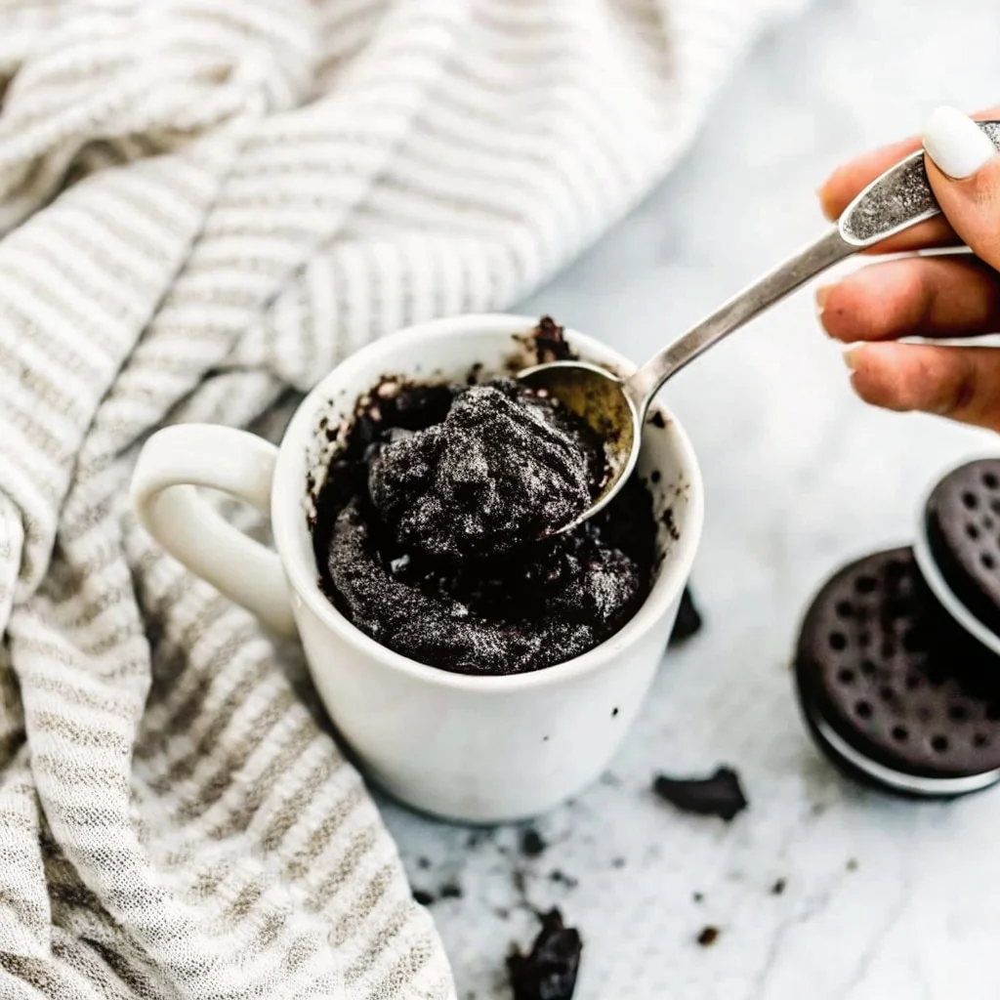

2 ingredient Oreo Mug Cake(super easy!)

Description
This 2 ingredient oreo mug cake will be the easiest cake or dessert you'll ever make in your entire life. This recipe just calls for 2 ingredients(duh) and can be done in under 3 minutes.
Ingredients
Steps
- Crush 4 oreos in a mug(Tip: Smash the oreos in a ziplock bag!)
- Add milk and mix well until it forms a batter like consistency. Add more milk if the mixture is too thick and clumpy or add more crushes oreos if the batter is too runny
- Optional: add oreo or nutella in the middle
- Microwave for 1 minute
- Enjoy the easiest chocolate cake of your life!
Home